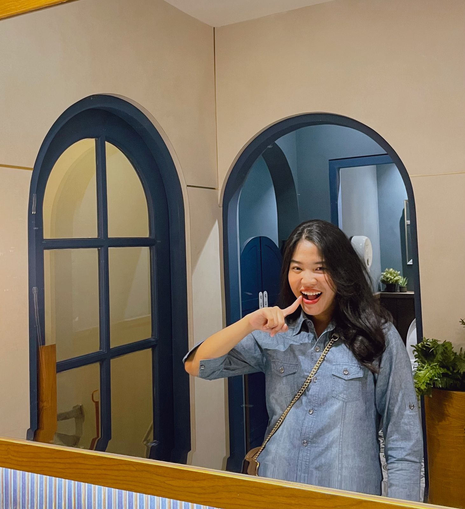
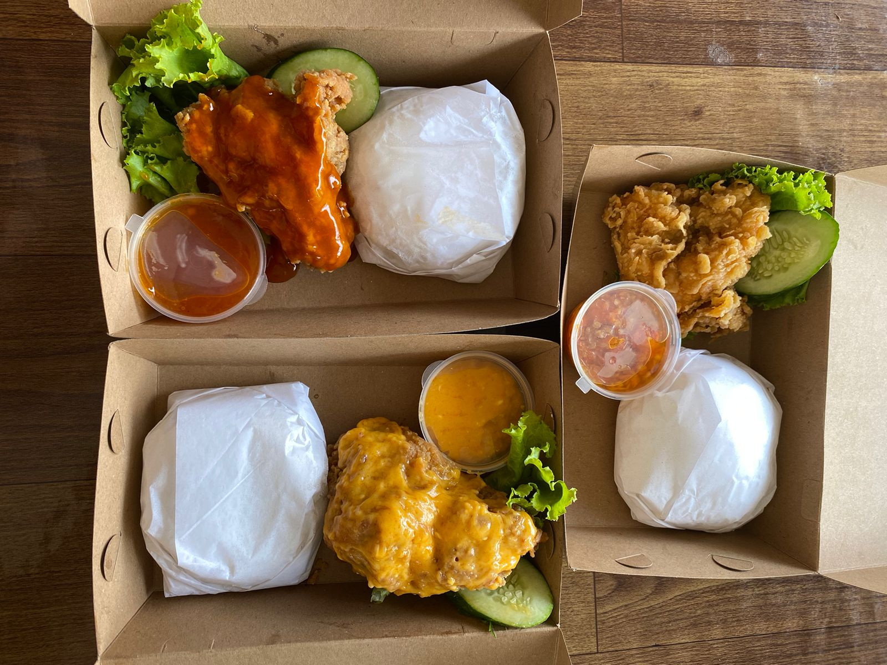
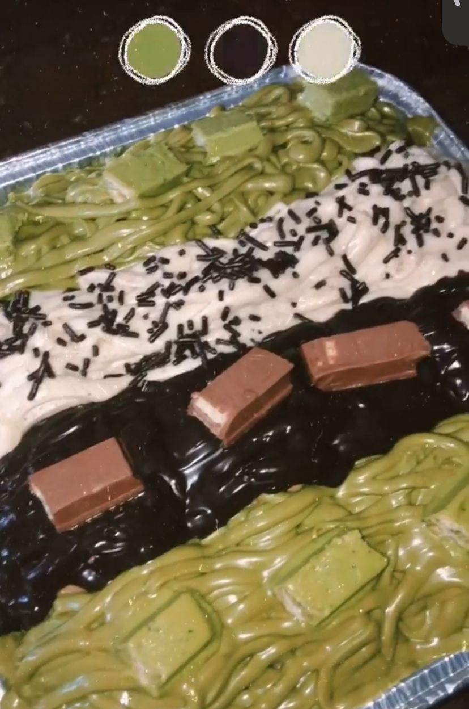
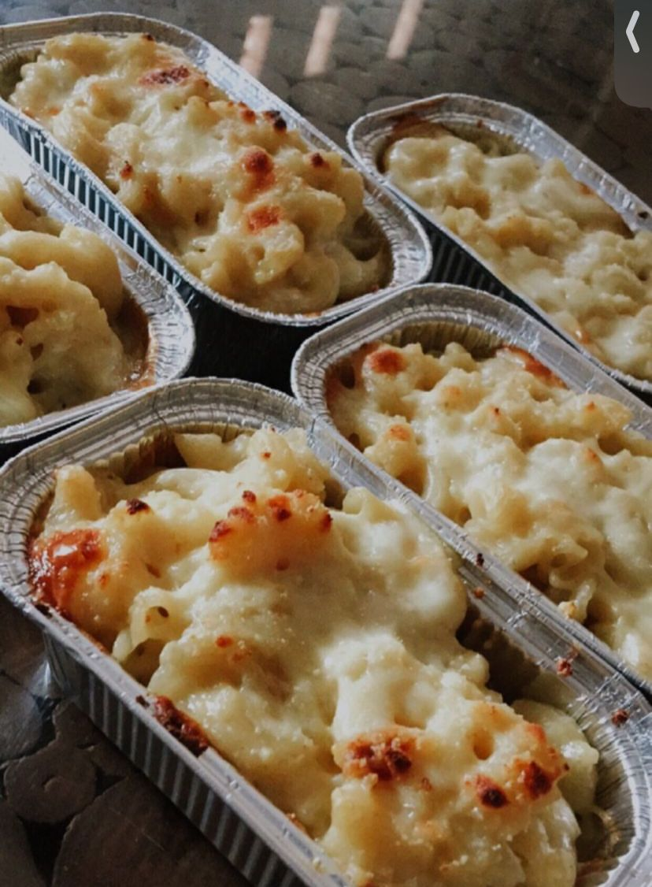
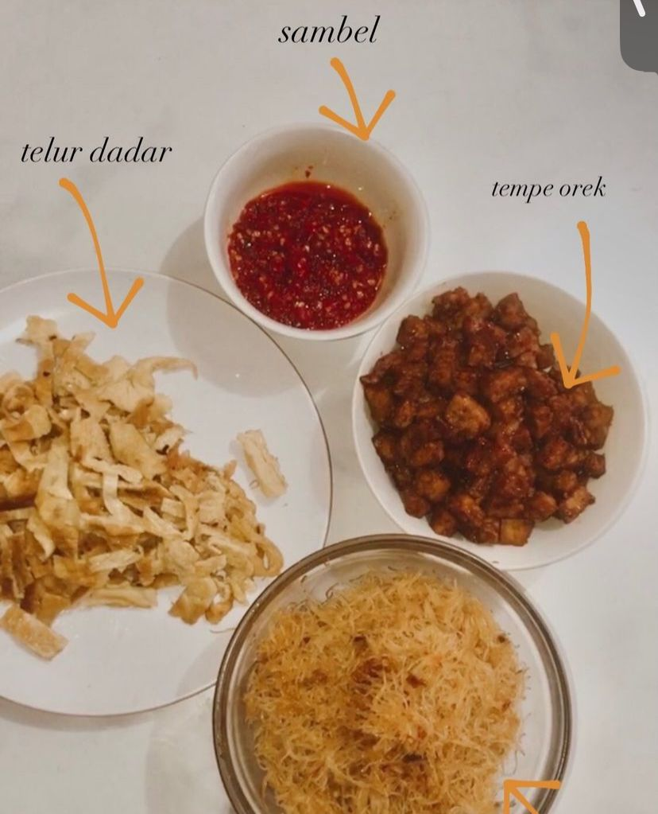

Portofolio

| Nama: | Sitaresmi Fadilla Meisya Pratama |
|---|---|
| NPM: | 2211010163 |
| Jurusan: | Teknik Informatika |
| Fakultas: | Ilmu Komputer |
| Hobi: | Baking & Cooking |
| Deskripsi Diri: | Aku sita orang yang paling bahagia, ceria, menarik banyak rezeki dan cantik. Aku suka memasak, membuat kue, rebahan, dan main hp pastinya. Aku suka banget jalan jalan, tapi belum ada partner yang ngajakin aku jalan jalan. Tapi gapapa, aku layak mendapatkan cinta, kebahagiaan dan kesuksesan. |
Riwayat Pendidikan
| SDN 2 Palapa | 2008-2014 |
|---|---|
| SMP 22 Bandar Lampung | 2014-2017 |
| SMA 2 Bandar Lampung | 2017-2020 |
Masakan Sita
   
Media Sosial
 |
 |